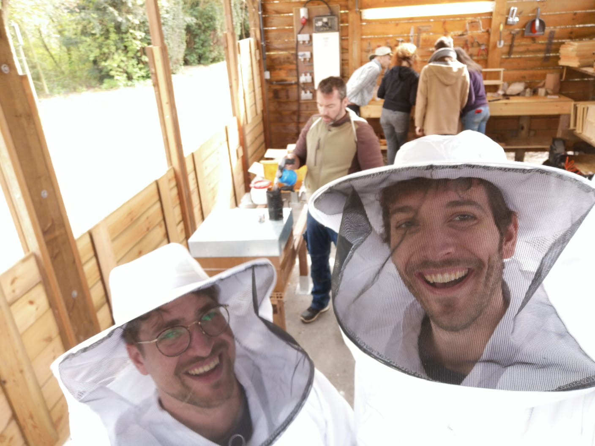
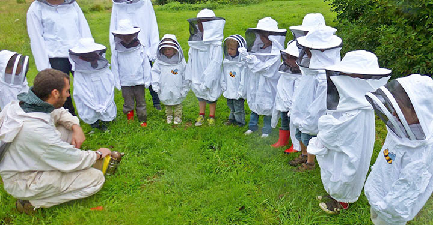
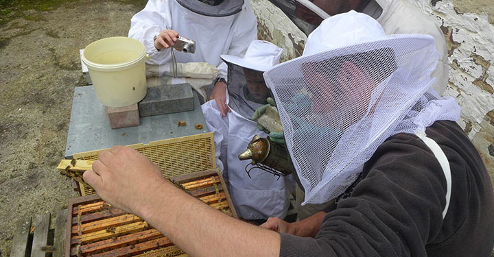

Bienvenue
Terre@Air est une ASBL d’éducation à l’environnement, elle a
pour but la protection de la nature et la création de lien entre l’être
humain et la nature. Les différents objectifs de l’ASBL sont à
chaque fois une porte d’entrée sur la compréhension de la nature. En
effet il est autant possible de comprendre et respecter notre
environnement en allant voir les abeilles qu’en s’interrogeant sur la
vie du sol.... Partant du principe que :
on respecte seulement ce que l’on connaît, les
différents secteurs de l’ASBL ont tous pour objectifs de
permettre aux humains qui y participent d’appréhender la globalité de la
nature. L’éducation à l’environnement est un secteur neuf ! En effet,
l’écologie et la protection de l’environnement sont des notions récentes
dans l’histoire. De nos jours les sciences et technologies nous
permettent de comprendre en profondeur les fonctionnements de la nature.
Malheureusement, cette compréhension reste souvent accessible uniquement
à une élite. Par la création d’animations adaptées, l’ASBL tente
de rendre ce savoir accessible à tous. Jusqu’il y a peu, la transmission
du savoir se faisait naturellement des aînés vers les plus jeunes.
Actuellement, ce lien est brisé dans bien des cas et il est temps
d’investir de l’énergie dans cette tâche oubliée afin de re-créer du
lien entre l’homme et la nature. L’ASBL vise la transmission des
enseignements nécessaire à la compréhension globale de la nature.

ANIMATIONS
L’ASBL Terre@Air vous propose des animations scolaires.
L’animateur vient donc directement en classe avec du matériel adapté.
Nous avons déjà constaté à de nombreuses reprises le changement
d’attitude des enfants après une animation. Ayant pris conscience du
rôle primordial de la nature dans notre vie, les enfants ont une
réflexion plus poussée et changent leur comportement au quotidien. Ils
vont par exemple, observer un insecte plutôt que de l’écraser, ils
vont partager leurs nouvelles découvertes avec leur entourage etc.

PARAINAGE
Nous avons l’ambition de participer à la sauvegarde des abeilles et au
développement des colonies en associant nos efforts à ceux des
parrains. Parrainer une ruche c’est agir et s’engager en faveur de la
sauvegarde des abeilles et de la biodiversité. Le concept est simple :
les parrains soutiennent financièrement une ruche et l’apiculteur les
tient informés de la vie de «leur» colonie. Dès lors les risques
financiers sont partagés et des colonies nouvelles peuvent voir le
jour. Il s’agit d’une réponse concrète à l’inquiétante disparition des
insectes pollinisateurs. La récolte du miel est divisée entre
parrains, abeilles et apiculteurs.
Aller vers le parainage
